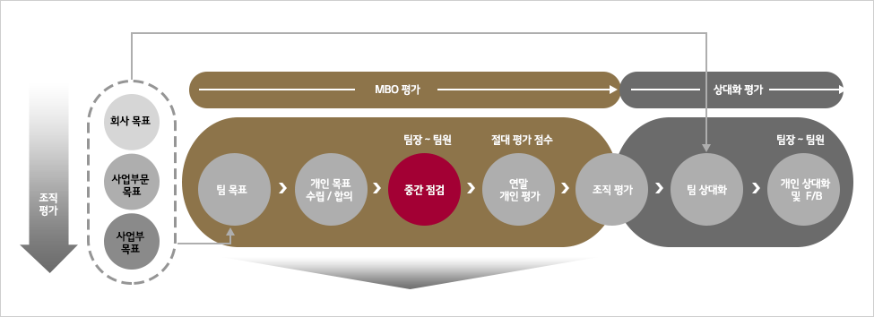

HR 제도안내
- HR 제도안내
- 인사제도·발령
- 평가
평가
평가 Process
MBO 평가
- 목표대비 달성도 평가시 환경/ 여건변화에 따른 업적 가감점 평가 및 직급과 팀 목표 기여도를 감안한 난이도/기여도 평가 실시
- 능력평가는 계층/ 직군별 필요한 능력의 요구수준을 감안하여 평가 - 직무지식, 과제해결능력, 대인관계 능력 평가 (영업 직군 : 역량평가실시)
- 태도평가는 LG Way 관점에서 평가 - 정도경영, 고객가치, 인간존중
- 사원 평가 Process

- 평가요소 및 상대화 기준
| 평가요소 | 팀장* | 팀원 | ||||
|---|---|---|---|---|---|---|
| 성과평가 | 업무목표달성도 | 85% | 45% | 70% | 49% | |
| 업적가감점 | (가감점≤±1) | (가감점≤±1) | ||||
| 난이도/기여도 | 20% | 21% | ||||
| HR Index | HR KPI | 20% | - | |||
| 능력평가 | 10% | 20% | ||||
| 태도평가 | 5% | 10% | ||||
| 합계 | 100% | 100% | ||||
* 생산팀장:조직리더십(20%),안전환경Index(10%)평가 실시 (업무목표 30%, 난이도/기여도 10%, HR Index 15%)
상대화 평가
- 상위 조직 평가결과를 기초로 상대화 T/O 결정 (Matrix 참조)
- MBO평가 결과(절대평가)를 기초로 T/O에 의한 상대화 실시 - 평가자 : 사업부장(팀장), 팀장(팀원)
- 직책자, 非직책자를 분리하여 상대화 실시 - 비직책 팀원의 경우 책임과 非책임(사원/선임)급을 분리하여 평가 실시
- 평가결과는 1:1면담을 통해 F/B하며 매년 F/B 충실도 등 Survey 실시
| 사업부/팀(조직평가) | ||||||
|---|---|---|---|---|---|---|
| 팀/개인 | S | A | B | C | D | |
| S | 15% | 12.5% | 10% | 7.5% | 5% | |
| A | 25% | 22.5% | 20% | 17.5% | 15% | |
| B | 60% | 60% | 60% | 60% | 60% | |
| C | 자율 | 5% | 10% | 12.5% | 15% | |
| D | 자율 | 자율 | 자율 | 2.5% | 5% | |
* 생산팀장:조직리더십(20%),안전환경Index(10%)평가 실시 (업무목표 30%, 난이도/기여도 10%, HR Index 15%)
평가 기간 및 대상
| 평가기간 | ㆍ1월 1일 ~ 12월末 | |
|---|---|---|
| 평가 대상자 | 재직자 | ㆍ해당 년도 5할 이상 근무자 |
| 중도입사자 | ㆍ해당 년도 7월1일까지 입사한 구성원 | |
| 직간전환자 (계약직→ 정규직) |
ㆍ해당 년도 7월 1일까지 정규직으로 전환한 구성원(경력입사와 유사) 단, 7월 2일 이후로 직간 전환한 인원일지라도 계약직 근무시와 동일 업무를 수행하는 경우에는 평가 실시 | |
| 평가 제외자 | 중도입사자 | ㆍ해당 년도 7월 2일 ~ 12월 31일 사이에 입사한 구성원 |
| 휴직자 | ㆍ해당 년도 5할 이상 휴직자 (출산전후휴가 포함) | |
| 학위과정 파견자 | ㆍ기술연구원 학위파견과정 복귀자 (복귀 時, 급호 및 연봉 재산정) | |
| 퇴직예정자 | ㆍ퇴직원상의 퇴직 일자 기준 | |